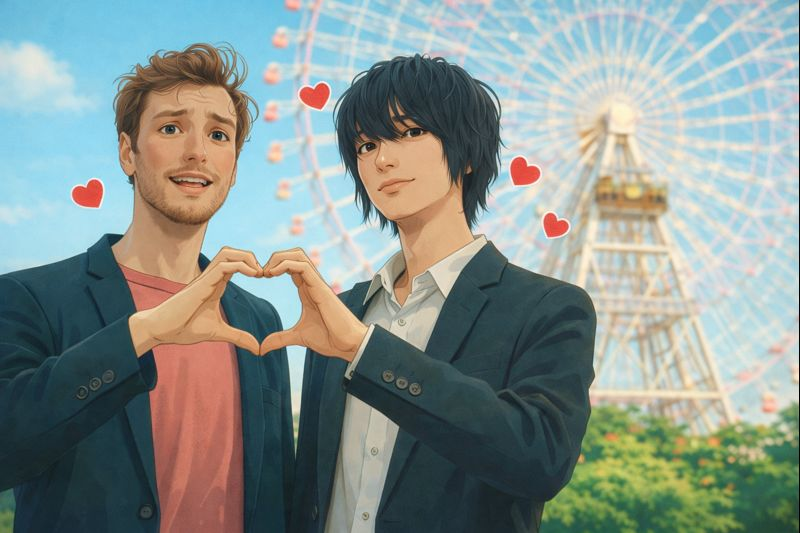
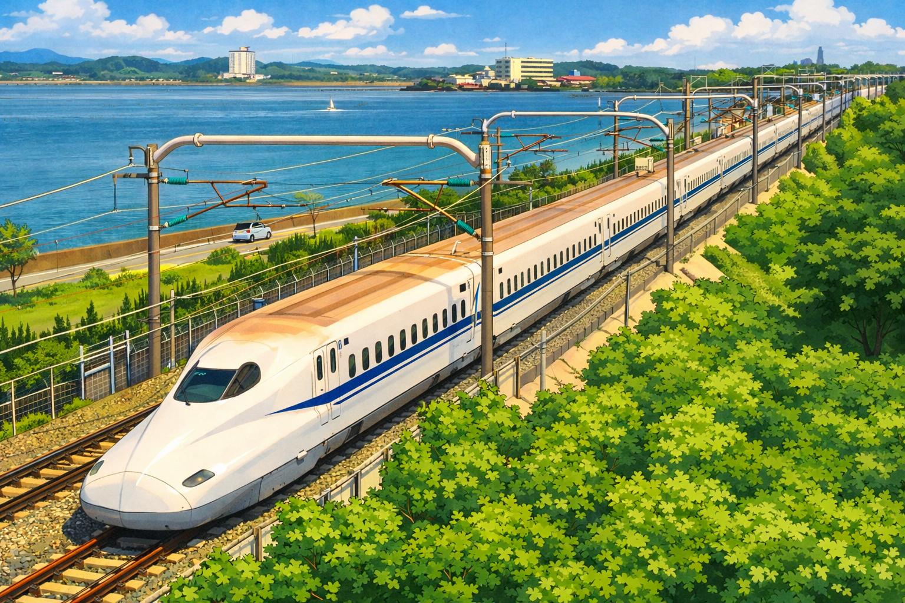

Japan is an island nation in East Asia known for its advanced technology, strong social discipline, and deep respect for tradition and nature.
Japan combines modern development with centuries-old cultural practices that continue to shape everyday life. Social harmony and respect influence behavior in public spaces, resulting in orderly cities, quiet transportation systems, and highly punctual public services. The country's limited land area and frequent earthquakes have driven innovative urban planning, compact housing designs, and some of the world's strictest building standards.
Seasonal awareness plays a major role in Japanese culture, with natural events such as cherry blossom season and autumn foliage influencing festivals, travel, and daily routines. Governed as a constitutional monarchy, Japan maintains a high standard of living and one of the longest life expectancies globally. Trust, efficiency, and community responsibility remain central values that support Japan's low crime rates and reliable infrastructure.
Quick Facts
 POPULATION
POPULATION
 SLEEP AT WORK
SLEEP AT WORK
 UMBRELLA CULTURE
UMBRELLA CULTURE
 VENDING MACHINES
VENDING MACHINES

BOYFRIEND RENTAL LOST ITEMS
LOST ITEMS

TRAIN APOLOGIES CAPSULE HOTELS
CAPSULE HOTELS
Click to flip
Writing System


Title
Content goes here...